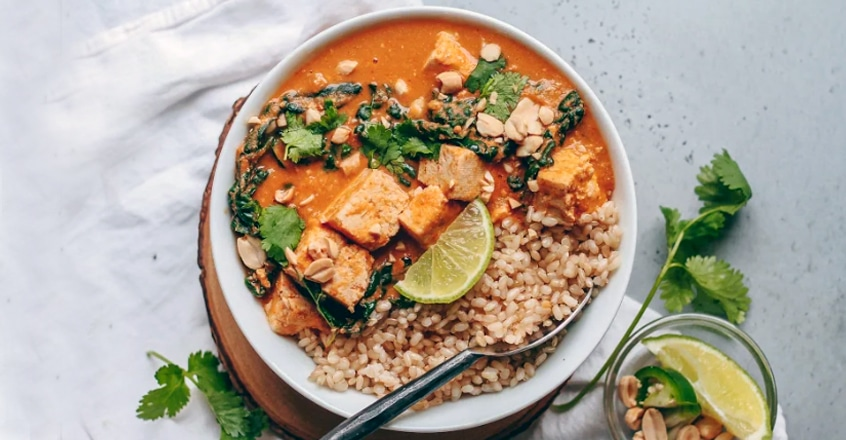

Banana-Oat Pancakes

Pancakes are my husband’s favorite, and Saturdays are a great time to make them. Many times, I will cook a double-batch and freeze the leftovers. They freeze very well and make a quick breakfast on some fast-paced mornings. Top them with any fruit you have on hand and enjoy!
yield: 4 SERVINGS
prep time: 15 MINUTES
cook time: 10 minutes
total time: 25 minutes
Ingredients
- 1-1/2 cup oat flour, easily made by blending old-fashioned oats in blender, dry
- 1/2 teaspoon baking soda
- 1/8 teaspoon salt
- 1/4 cup chopped walnuts
- 1 ripe banana, mashed
- 1 tablespoon pure vanilla
- 1 tablespoon maple syrup
- 3/4 cup applesauce
- 1.5 teaspoons apple cider vinegar
- 1 cup vanilla almond milk, plain will work fine too
How to Make It
- Making oat flour is simple. Just put whole oats into a blender or food processor.
- Blend oats until soft and powdery. This will take less than 1 minute.
- Add all dry ingredients (flour, baking soda, salt, walnuts) to a large bowl, and mix together.
- In another bowl, mash banana well with fork or potato masher. Add all other ingredients (vanilla, maple syrup, apple cider vinegar, and almond milk). Whisk together thoroughly. Combine both bowls–dry ingredients and wet ingredients, and stir well.
- Heat large nonstick skillet. I use an Ozeri pan and am able to cook these with absolutely no oil.
- Pour small amounts of batter onto the heated skillet and cook until the tops bubble and edges are dry.
- Turn pancakes over and cook the other side for about 1 minute, until golden brown.
- Serve immediately with maple syrup drizzled over the top.
Notes
Detailed instructions, in-process photos, and my personal helpful tips can be found in the article above.
Back to recipe list